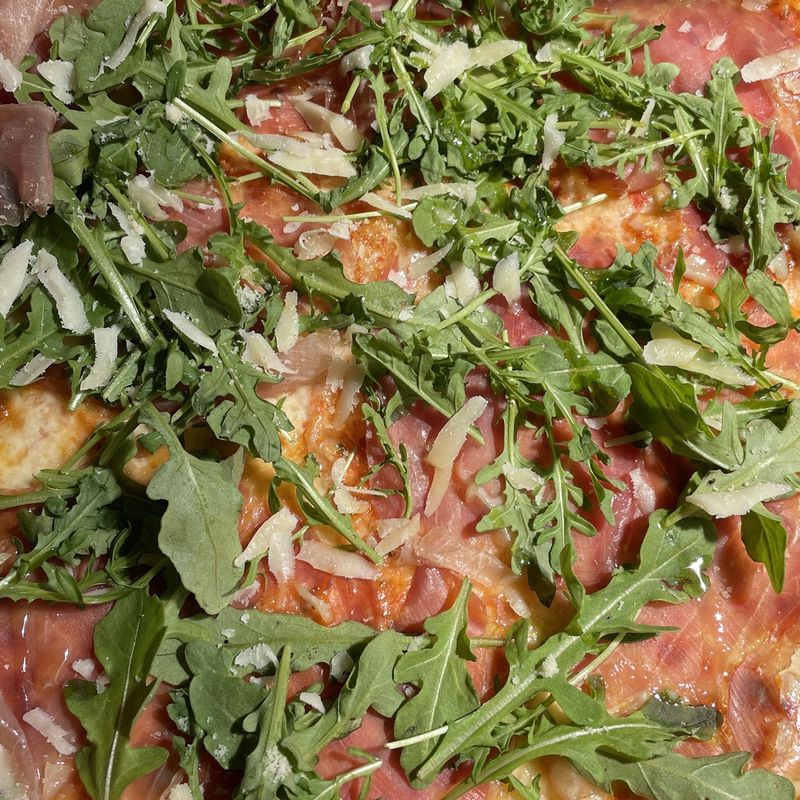
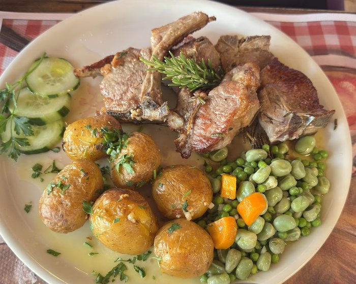

Après la balade
- Une Diekirch en terrasse.
- Une pizza : la Pastor, ou l’une des vingt autres.
- Ou le Bacalhau à Brás de la saison.
- Et pour finir, le Dessert Pastor.
Toute l'équipe se réjouit de vous accueillir !Déi ganz Ekipp freet sech op Iech!
21 pizzas, de la Margherita à la Pastor.
Sur base tomate et mozzarella, sauf la Biancaneve- Margheritatomate, mozzarella
- Prosciuttojambon
- Salami
- Diavolasalami piquant
- Peperoncinosalami piquant, pepperoncini
- Funghichampignons
- Napolianchois, câpres, olives
- Prosciutto e Funghijambon, champignons
- Quattro Stagionijambon, salami, légumes
- Quattro Formaggiparmesan, gorgonzola, chèvre

- Scampisscampis, ail
- Tonnothon, oignon, olives
- Hawaiijambon, ananas
- Végétariennelégumes
- Calzonejambon, oeuf
- Fruits de mer
- Chefsalami, jambon, jambon cru, légumes
- Parmajambon cru, roquette
- Contadinajambon, salami, lardons, oignons, oeuf
- Biancanevecrème blanche, mozzarella, jambon, lardons, oignons
Pastor
tomate, mozzarella, saumon, thon, scampis
De nouvelles suggestions vous attendent chez O Pastor !Nei Suggestioune waarden op Iech am O Pastor !

Et aussi
À très bientôt chez O Pastor !
Bis ganz geschwënn beim O Pastor !3, route de Luxembourg
L-6210 Consdorf
En haut des marches, la terrasse.
Ouvert du mercredi au dimanche. Fermé lundi et mardi.
Aussi à emporter.
Itinéraire